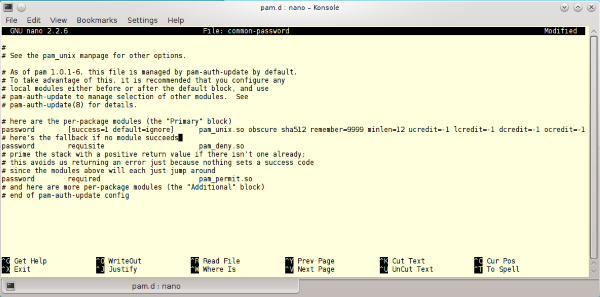
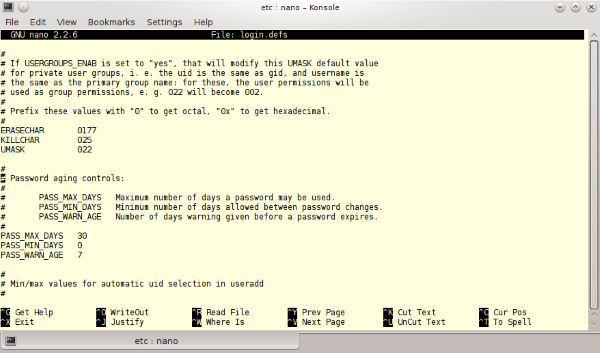

a)
Unter /etc/pam.d/common-password könnne diverse Regeln für Benutzerpasswörter festgelegt werden.
Mit
remember=9999 kann der Benutzer "nie" wieder das selbe Passwort verwenden.
Mit
nullok=0 kann festgelegt werden, dass der Benutzer ein Passwort haben muss. Standardmäßig ist diese Option aktiviert.
Mit
obscure können diverse Regeln festgelegt werden, die prüfen, ob das neue Passwort dem alten zu sehr ähnelt.
Mit
minlen=12 kann die Mindestlänge des Passwortes festgelegt werden.
Mit
ucredit=-1 lcredit=-1 dcredit=-1 ocredit=-1 kann festgelegt werden, dass das Passwort mindestens einen Groß- und
Kleinbuchstaben, eine Zahl und ein Sonderzeichen beinhalten muss.
Ebenfalls kann mit
PASS_MAX_DAYS 30, PASS_WARN_AGE 7 unter /etc/login.defs eingestellt werden, dass der Benutzer
jeden Monat ein neues Passwort festlegen muss. Er wird allerdings eine Woche zuvor darüber benachrichtigt.


b)
Hier noch die Funktion überprüfen